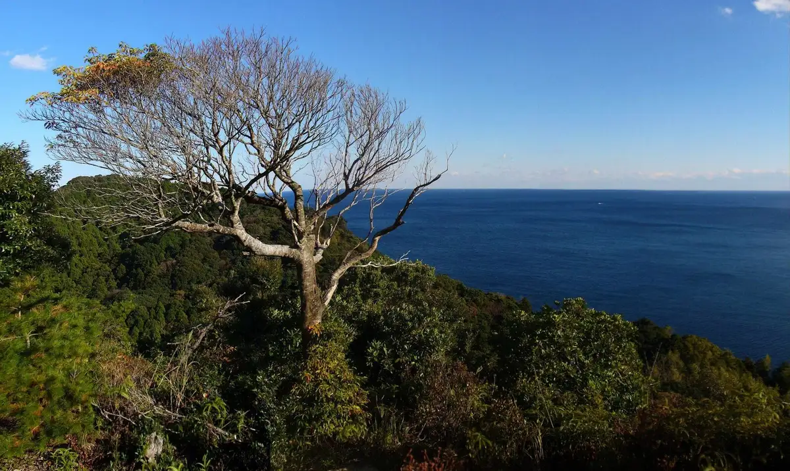
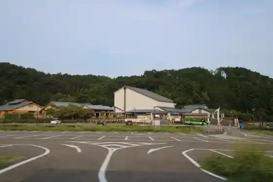
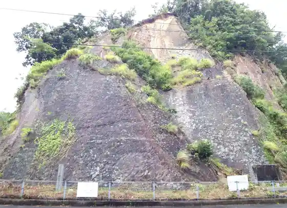
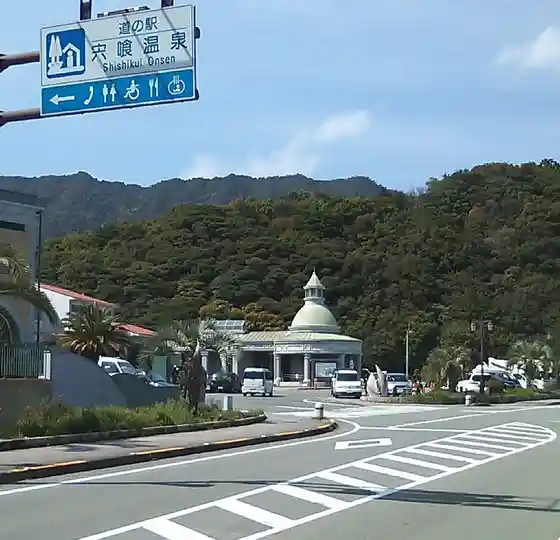
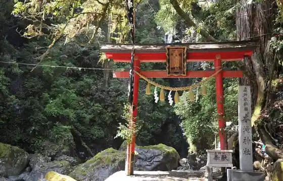

Japan / Tokushima / Kaiyo Town
Kaiyo Town
Kaiyo Town · Tokushima
Kaiyo Town
Highlighted on the Tokushima map.

Sights
Kaiyo Town Isaribi no Mori Koen Shisetsu
Awa Kainan Bunka Village

Shishikui Ura no Kaseki Renkon

Kaiyo Town Shishikui Kanko Taminaru (Roadside Station Shishikui Onsen)

Todoroki Tsukumo Taki

Kaiyo Town Kaiyo Shizen Museum Marinjamu
Dai Suna Coast
Kaiyo Town Isaribi no Mori Koryu Sokushin Shisetsu